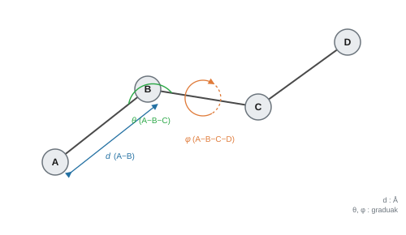
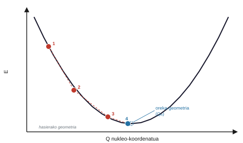

Geometria molekularra eta Born-Oppenheimer hurbilketa#
Sarrera#
Edozein propietate fisiko-kimiko zehazteko molekula batean, beharrezkoa da atomoen koordenatu espazialak zehaztasunez ezagutzea. Born-Oppenheimer hurbilketak nukleoen eta elektroien arteko masa-desberdintasun handia aprobetxatzen du haien mugimenduak deskonektatzeko, eta horrek aukera ematen du banaketa elektronikoa nukleo-disposizio finkoen gainean ebazteko. Esparru teoriko honek oinarritzen du energia-kalkulu puntualen eta koordenatu konstanteen arteko bereizketa, baita geometria-optimizazioen artekoa ere, energia-minimo egonkorrak aurkitzera bideratuta daudenak.
Born-Oppenheimer hurbilketa#
Protoi baten masa elektroiarena baino 1836 aldiz handiagoa da gutxi gorabehera; beraz, nukleo atomikoak askoz ere motelago mugitzen dira. Born-Oppenheimer hurbilketak denbora-desberdintasun hori aprobetxatzen du nukleoak karga-zentro estazionariotzat hartuz, elektroi-mugimendua ebazten den bitartean. Horrela, energia elektronikoa nukleo-posizio hautatuen araberako magnitude parametriko gisa lortzen da. Deskonexio hori gabe, edozein molekularen ebazpen mekanokuantikoa konputazionalki bideraezina izango litzateke.
Oharra
Nukleoak espazio-disposizio desberdinetan finkatuz eta energia elektronikoa bakoitzerako kalkulatuz, energia potentzialaren gainazala sortzen dugu (PES, Potential Energy Surface). Gainazal hiperdimensional honetan, nukleoen dinamika, bibrazio molekularra eta erreakzio kimikoen aurrerapena deskribatzen dira.
Geometria molekularra: distantziak, angeluak eta diedroak#
Molekula baten geometria hiru parametrok definitzen dute: lotura-distantziak (angstrometan, Å), lotura-angeluak (gradutan) eta tortsio-angelu diedrikoak (gradutan). Distantziek eta angeluek atomo mugakideen arteko konektibitate lokala zehazten dute; diedroek lotura zentral bat partekatzen duten planoen arteko biraketa espaziala deskribatzen dute. Gaussianek koordenatu interno horiek erabiltzen ditu gradientea kalkulatzeko eta geometriak optimizatzeko. GaussView-n, hiru parametroak zuzenean neur eta bistara ditzakegu ereduaren gainean.


Energia puntuala: kalkulatzea mugitu gabe#
Puntu bakarreko energia-kalkulu batean (Single Point), nukleoen posizioak finko mantentzen dira sarrera-fitxategiko koordenatuen arabera. Geometria konstante horrekin, Gaussianek egitura elektronikoa ebazten du atomo bakar bat ere mugitu gabe. Emaitza hartree-tan adierazitako energia elektroniko osoa da konformazio horretarako. GaussView-n, kalkulu hau Job Type → Single Point (normalean Energy gisa etiketatua) hautatzen dugu.
Geometria-optimizazioa: minimoa aurkitzea#
Geometria-optimizazio batean, Gaussianek hasierako egituraren gaineko energia kalkulatzen du eta nukleoen koordenatuekiko deribatuak ebaluatzen ditu (energiaren gradienteak). Nukleo bakoitzaren gainean eragiten duten indar elektrostatikoak \(A\) zeinu-aldaketarekin bat datoz:
Indar horietatik abiatuta, algoritmoak nukleoak energia minimora murrizten duen norabidean mugitzen ditu. Geometria berri bakoitzean, uhin-funtzioa eta indarrak birkalkulatzen ditu. Prozesua errepikatzen da gradienteak tolerantzia numerikoaren barruan anulatzen den arte:
GaussView-n, kalkulu hau Job Type → Optimization hautatzen dugu. Hurrengo irudiak algoritmoaren urratsak ilustratzen ditu, potentzial-putzura konbergituz.


Bibliografia#
Gaussian 16, Revision A.03, M. J. Frisch, G. W. Trucks, H. B. Schlegel et al., Gaussian, Inc., Wallingford CT, 2016.
Szabo, A.; Ostlund, N. S. Modern Quantum Chemistry. Dover, 1996.
Zer gertatzen da hasierako geometria oso txarra bada?
Hasierako geometria oreka-egituratik oso urrun badago, algoritmoak urrats gehiegi behar izan ditzake, minimo lokal batean harrapatuta gera daiteke edo ez konbergitu. .log fitxategian, egoera hori identifikatzen da optimizazio-zikloen muga lortzen denean konbergentzia-irizpideak bete gabe. Hori saihesteko, komeni da molekulak GaussView-ren fragmentu estandarrak erabiliz eraikitzea, hasierako distantzia eta angelu kimikoki arrazoizkoak ematen baitituzte.
Gradiente eta optimizazio-algoritmoei buruz gehiago
Gaussianen lehenetsitako optimizazio-algoritmoek (Berny metodoa, adibidez) quasi-Newton motako teknikak erabiltzen dituzte, hessianoaren hurbilketa (bigarren deribatuen matrizea) iteratiboki eguneratzen dutenak, minimoaren norabidean desplazamendua proiektatzeko. Ziklo bakoitzak uhin-funtzioa eta gradiente osoa kalkulatzea eskatzen duenez, molekula handiak edo konformazionalki malguak optimizatzeak kostu konputazional handia eta optimizazio-urrats ugari eskatu ditzake.